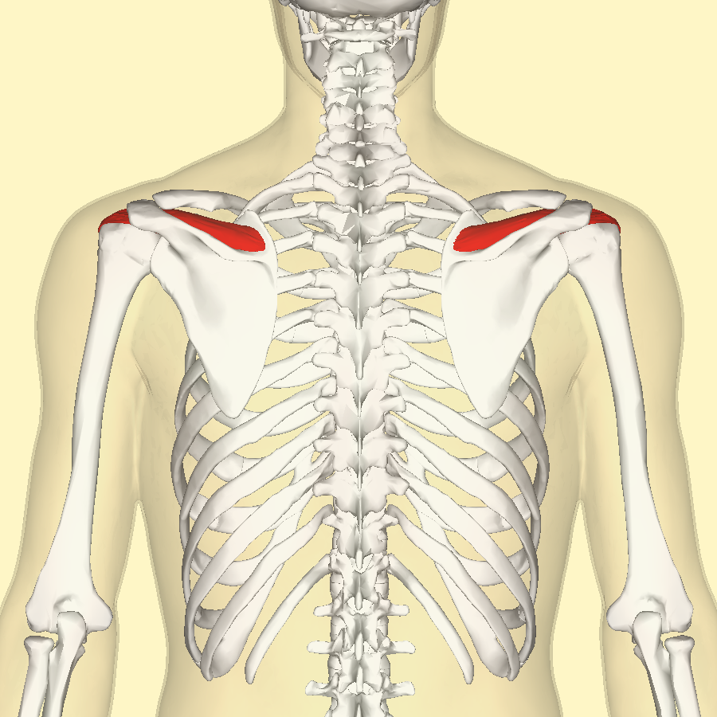
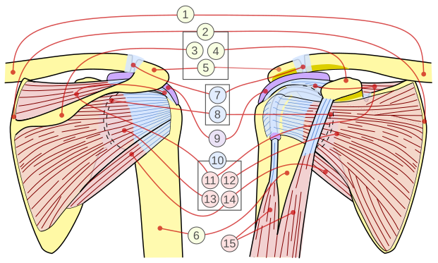

- השריר יושב בחלק האחורי העליון של השכמה, בגומה העל-קוצית.
- הגיד שלו עובר מתחת לאקרומיון, אל הגבשושית הגדולה של עצם הזרוע.
- בשיעור, הסדר מבחוץ פנימה הוא קשת האקרומיון, אחר כך בורסה, ואז השריר.
עמודי מערכות הגוף, השרירים והגף העליון עדיין לא נבנו, ולכן הם מוצגים כטקסט ולא כקישור.
עמוד מושג לדוגמה
סופראספינאטוס
Supraspinatus
בסיכום הקורס השם הוא שריר על-קוצי.
השריר מתחיל את הרחקת הזרוע ב-15 המעלות הראשונות, בטווח שבו הדלתא עדיין לא עובדת.
חמישה כרטיסים
-
מוצא
הגומץ העל-קוצי של השכמה (supraspinous fossa).
-
אחז
הגבשושית הגדולה של עצם הזרוע, הפן העליון (greater tubercle, superior facet).
-
עצבוב
עצב על-שכמי C5-C6 (suprascapular nerve).
-
פעולה
התחלת הרחקה של הזרוע (15 המעלות הראשונות) וייצוב ראש ההומרוס.
-
אספקת דם
עורק על-שכמי (suprascapular artery).
מבנה

מיקום השריר על השכמה, מבט אחורי. הוא יושב מעל קוץ השכם, בגומה העל-קוצית.
קרדיט: Anatomography, על בסיס BodyParts3D. רישיון CC BY-SA 2.1 Japan. הקובץ ב-Wikimedia Commons.

הסופראספינאטוס הוא אחד מארבעת שרירי השרוול המסובב (SITS).
- על-קוצי, תת-קוצי ועגול קטן נאחזים בגבשושית הגדולה.
- תת-שכמי הוא היחיד שנאחז בגבשושית הקטנה, בצד הקדמי של השכמה.
- בשיעור הם מתוארים כארבעה שרירים פנימיים שעובדים יחד ומביאים את הכתף למקומות שונים.

השריר בתוך השרוול המסובב. באיור, המבט האחורי בצד שמאל והמבט הקדמי בצד ימין.
11 על-קוצי, 12 תת-שכמי, 13 תת-קוצי, 14 עגול קטן.
קרדיט: Jmarchn, Wikimedia Commons. רישיון CC BY-SA 3.0. הקובץ ב-Wikimedia Commons.

אפשר לסובב את המודל ולראות את השריר לבדו.
- זה השריר הימני בלבד, בלי השכמה ובלי שאר השרוול.
- המודל כבר הוקטן במאגר המקור, כדי להישאר קובץ קל.
סופראספינאטוס ימני. גרירה מסובבת את המודל.
קרדיט: BodyParts3D, © The Database Center for Life Science. אלמנט FJ1506, גרסה 4.0, הקטנה של 99% מהמצולעים, הומר כאן ל-GLB. רישיון לפי עמוד המאגר העדכני: CC BY 4.0. כותרת הקובץ המקורי מציינת גם CC BY-SA 2.1 Japan. עמוד הנתונים.
מודל Anatomary ב-Sketchfab, שהכין Alexander Safir, הוא CC BY 4.0 ומתבסס על אותו מאגר. קובץ ההורדה שם הוא OBJ של כ-78MB ודורש חשבון, ולכן לא הועלה. כאן מוצג הקובץ הרשמי שכבר הוקטן.
פעולה
- השריר מתחיל את הרחקת הזרוע, מ-0 עד 15 מעלות.
- בטווח הזה שריר הדלתא עדיין לא עושה את ההרחקה.
- אחרי 15 מעלות הדלתא ממשיכה את התנועה.
- ייצוב ראש ההומרוס מופיע בכרטיס, ולא בשורת השריר בשיעור 8.
פעולת השריר: הרחקת הזרוע. החץ באיור מראה את כיוון התנועה. אפשר להפעיל את הסרטון.
קרדיט: Young Lae Moon. רישיון CC BY 3.0. הקובץ ב-Wikimedia Commons. מקור: הסרטון ב-YouTube.
עצבוב ואספקת דם
- העצב הוא עצב על-שכמי.
- הוא עובר בחריץ העל-שכמי, ומעצבב גם את השריר התת-קוצי.
- בשיעור 9 העצב יוצא מהגזע העליון. הגזע העליון הוא C5 ו-C6.
- אספקת הדם בכרטיס היא עורק על-שכמי. בסיכום שיעור 8 העורק הזה רשום למפרק החזה והבריח, לא לשריר עצמו.
נקודה קלינית
- השריר עובר מתחת לאקרומיון.
- בגלל המיקום הזה הוא חשוף לצביטה (impingement) ולקרעים.
קישורים
כרטיסיות
כתובת מדויקת של כל חפיסה לא נמצאה במאגר הזה. שלושת הקישורים נפתחים ברשימת החפיסות באתר הכרטיסיות.
השיעור
מושגים קרובים
עמודים שעדיין לא נכתבו
לאינפראספינאטוס, לדלתואיד, למקלעת הזרוע ולעצב העל-שכמי אין עדיין עמוד. הקישורים למעלה נשארים בעמוד הזה, כדי שלא ייפתח דף חסר.